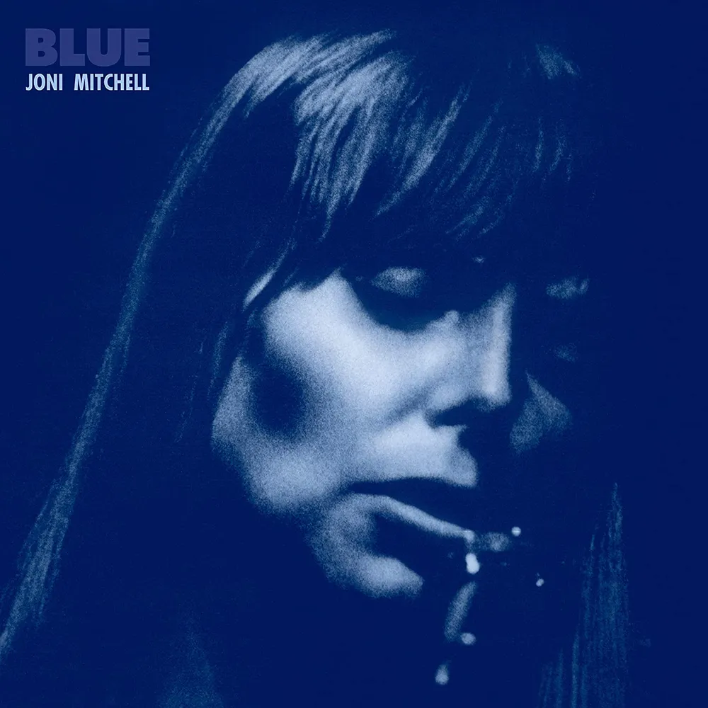

안녕하세요 한스입니다.
영화 러브 액츄얼리에는 여러 커플이 나오는데, 그중 해리(앨런 릭먼)와 캐런(엠마 톰슨) 부부의 이야기에서 중요한 역할을 하는 가수가 나옵니다. 조니 미첼(Joni Mitchell)의 앨범 Both sides now(2000) CD 로 캐런은 남편 해리의 불륜을 확신하게 됩니다. 이 앨범의 Both sides now는 워낙 유명하고 영화 코다 Coda(2021)에서도 중요한 노래로 사용되었습니다. 이 노래 외에도 조니 미첼의 크리스마스 노래가 있는데, 바로 오늘 소개해 드릴 River 입니다.
River는 1971년 발매된 그녀의 대표작 Blue 앨범에 수록된 곡으로, 50년이 지난 지금까지도 많은 사랑을 받고 있는 명곡입니다. 크리스마스 시즌에 자주 들리는 이 노래는 겉으로 보기에는 평범한 크리스마스 캐롤 같지만, 실제로는 그녀의 깊은 슬픔과 후회를 담고 있는 매우 개인적이고 감정적인 곡입니다.

조니 미첼(Joni Mitchell) - River
River는 조니 미첼이 그레이엄 내쉬(Graham Nash)와의 관계가 끝난 후 쓴 노래로 알려져 있습니다. 1968년부터 1970년까지 교제했던 두 사람의 이별을 담은 이 곡에서 조니 미첼은 자신의 취약한 모습을 드러내며 깊은 후회와 고독감을 표현합니다.
조니 미첼 River 노래 가사
It's coming on Christmas
They're cutting down trees
They're putting up reindeer
And singing songs of joy and peace
Oh, I wish I had a river
I could skate away on
But it don't snow here
It stays pretty green
I'm going to make a lot of money
Then I'm going to quit this crazy scene
I wish I had a river
I could skate away on
I wish I had a river so long
I would teach my feet to fly
Oh, I wish I had a river
I could skate away on
I made my baby cry
He tried hard to help me
You know, he put me at ease
And he loved me so naughty
Made me weak in the knees
Oh, I wish I had a river
I could skate away on
I'm so hard to handle
I'm selfish and I'm sad
Now I've gone and lost the best baby
That I ever had
Oh, I wish I had a river
I could skate away on
I wish I had a river so long
I would teach my feet to fly
Oh, I wish I had a river
I could skate away on
I made my baby say goodbye
It's coming on Christmas
They're cutting down trees
They're putting up reindeer
Singing songs of joy and peace
I wish I had a river
I could skate away on
노래는 크리스마스 시즌을 배경으로 시작됩니다:
"It's coming on Christmas
They're cutting down trees
They're putting up reindeer
And singing songs of joy and peace"
하지만 곧 화자의 우울한 심정이 드러납니다:
"Oh I wish I had a river I could skate away on"
이 구절은 노래 전체에서 반복되며, 현실에서 도망치고 싶은 화자의 마음을 잘 보여줍니다. 화자는 자신이 "다루기 힘들고, 이기적이며 슬프다"고 말하며 "내가 가졌던 최고의 사람을 잃어버렸다"고 후회합니다.
음악적 특징
River의 피아노 반주는 유명한 크리스마스 캐럴 Jingle Bells의 멜로디를 차용하고 있습니다. 하지만 원곡의 경쾌함과는 달리, 미첼의 버전은 우울하고 멜랑콜리한 분위기를 자아냅니다. 이는 크리스마스의 즐거움과 개인의 슬픔을 대조시키는 효과를 만들어냅니다. River는 발매 이후 수많은 아티스트들에 의해 커버되었습니다. 배리 매닐로우, 사라 맥라클란, 엘리 굴딩 등 다양한 장르의 뮤지션들이 이 곡을 재해석했으며, 특히 엘리 굴딩의 버전은 2019년 영국 차트 1위를 기록하기도 했습니다. 이 노래는 크리스마스 시즌에 자주 들리지만, 실제로는 크리스마스에 대한 노래라기보다는 크리스마스를 배경으로 한 이별 노래에 가깝습니다. 조니 미첼 본인도 "크리스마스에 외로운 사람들을 위한 노래"라고 설명한 바 있습니다.
조니 미첼의 노래 River는 50년이 지난 지금까지도 많은 사람들의 마음을 울리는 명곡입니다. 겉으로는 행복해 보이는 크리스마스 시즌에 느끼는 개인의 고독과 슬픔을 솔직하게 표현한 이 노래는, 우리에게 진정한 공감과 위로를 전해줍니다. 조니 미첼의 섬세한 가사와 감성적인 멜로디는 시간이 지나도 변함없이 청자의 마음을 어루만지며, 그녀의 음악적 천재성을 다시 한 번 확인시켜 줍니다.
금방 크리스마스가 다가올 것 같은 기분입니다. 신나는 분위기의 크리스마스 노래도 좋지만, 자신을 돌아볼 수 있는 조니 미첼의 노래 River 를 들으며 한 해를 마무리해 보는건 어떨까요?